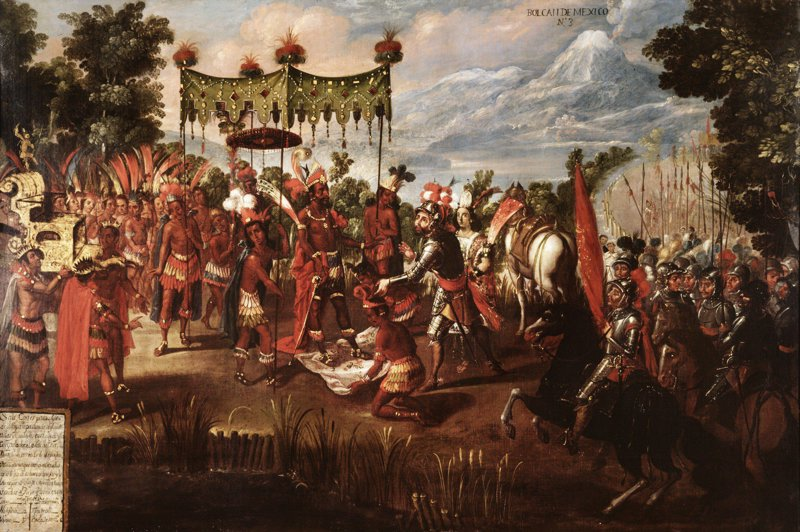
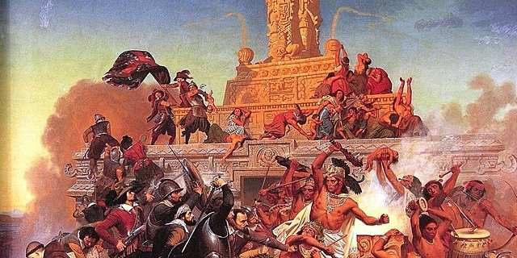
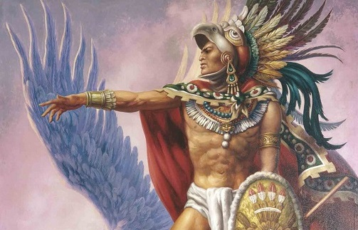
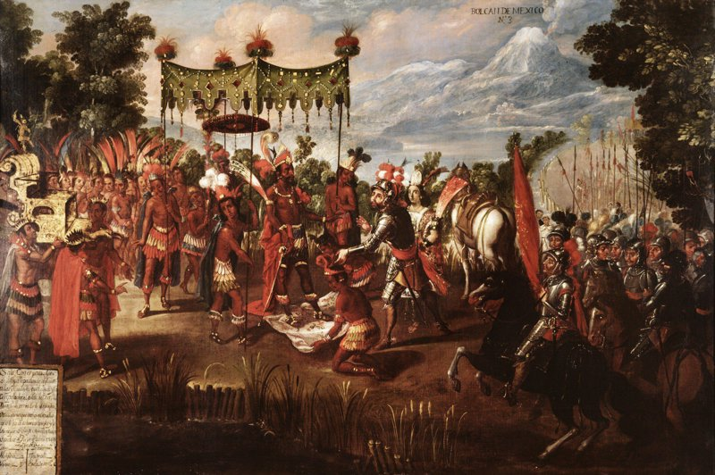
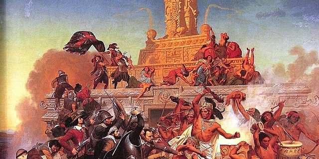
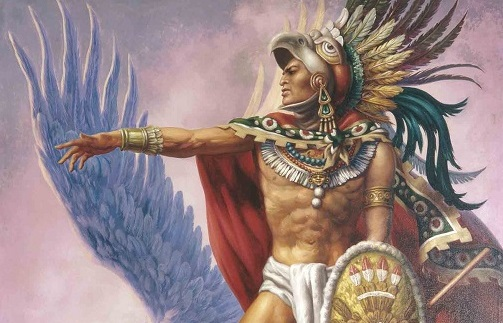
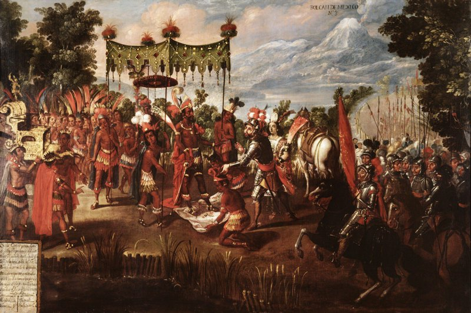
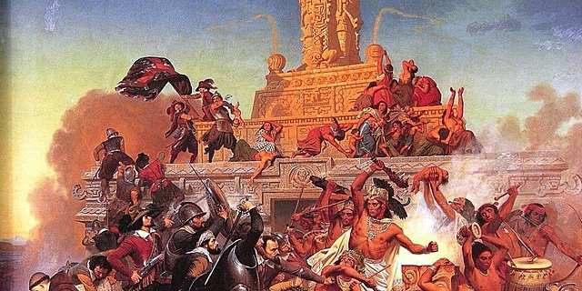
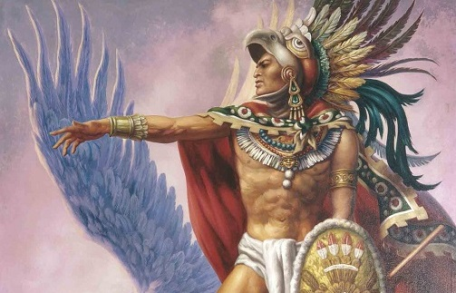

La Conquista del Imperio Azteca por los conquistadores españoles, liderados por Hernán Cortés , entre 1519 y 1521 , es uno de los episodios más dramáticos y significativos de la historia de América. Este proceso culminó con la caída de Tenochtitlan , la imponente capital azteca, y marcó el fin de una de las civilizaciones más poderosas de Mesoamérica, dando paso al dominio español en lo que hoy es México.
---
El Poderoso Imperio Azteca antes de la Conquista
A principios del siglo XVI, el Imperio Azteca (o Triple Alianza) dominaba gran parte de Mesoamérica desde su capital, Tenochtitlan , una ciudad construida sobre islas en el lago de Texcoco, comparable en tamaño y sofisticación a las grandes ciudades europeas de la época. Los aztecas eran un pueblo guerrero y su imperio se basaba en:
Tributos: Numerosos pueblos sometidos debían pagar tributo en bienes, trabajo y personas para sacrificios religiosos.
Agricultura Avanzada: Desarrollaron las chinampas, "jardines flotantes" que permitían una alta productividad agrícola.
Religión Compleja: Una rica mitología y un calendario sofisticado, con sacrificios humanos como parte central de su cosmovisión.
Ingeniería y Urbanismo: Templos, palacios, calzadas y acueductos que asombraron a los españoles.
Sin embargo, la dominación azteca había generado un profundo resentimiento entre muchos de los pueblos sometidos, lo que sería un factor clave en la conquista.
---
La Llegada de Hernán Cortés (1519)
En 1519 , Hernán Cortés , un hidalgo extremeño con experiencia en la conquista del Caribe, desobedeció las órdenes del gobernador de Cuba, Diego Velázquez, y partió con una expedición hacia las costas de lo que hoy es México. Sus fuerzas iniciales eran sorprendentemente pequeñas:
Aproximadamente 500 soldados españoles .
Unos 15 caballos .
Pocas piezas de artillería y ballestas .
Al desembarcar en la costa del Golfo, Cortés fundó Veracruz y tomó la decisión audaz de hundir sus propias naves para evitar deserciones y obligar a sus hombres a avanzar.
---
Alianzas, Conflictos y la Entrada a Tenochtitlan
El éxito de Cortés se basó en una combinación de factores:
Ventaja Tecnológica: Armas de fuego (arcabuces, cañones), armaduras de metal, caballos y perros de guerra, elementos desconocidos para los indígenas.
Enfermedades: La introducción de enfermedades europeas como la viruela , a la que los indígenas no tenían inmunidad, causó estragos devastadores en la población azteca.
Interpretación y Estrategia: La Malinche (Malintzin o Doña Marina), una mujer indígena que hablaba náhuatl y maya, fue crucial como intérprete y consejera. Además, la creencia de algunos aztecas de que Cortés podría ser Quetzalcóatl (una deidad cuyo regreso se esperaba) generó cierta indecisión inicial.
Alianzas con Pueblos Sometidos: Cortés rápidamente identificó el descontento de los pueblos sometidos a los aztecas. Estableció alianzas cruciales con grupos como los tlaxcaltecas , feroces enemigos de los aztecas, que le proporcionaron miles de guerreros y apoyo logístico.
En noviembre de 1519 , Cortés y sus aliados indígenas, con Moctezuma II (el Huey Tlatoani o emperador azteca) permitiéndoles el paso, entraron pacíficamente en Tenochtitlan. Los españoles fueron inicialmente recibidos como huéspedes, pero pronto tomaron a Moctezuma como prisionero, intentando gobernar a través de él.
---
La Noche Triste y la Caída de Tenochtitlan
La situación en Tenochtitlan se volvió insostenible. Mientras Cortés estaba fuera para enfrentar a una expedición enviada para arrestarlo (comandada por Pánfilo de Narváez), su lugarteniente, Pedro de Alvarado, masacró a la nobleza azteca durante una festividad, desatando una revuelta.
Al regresar, Cortés encontró la ciudad en rebelión. Durante la noche del 30 de junio de 1520 , conocida como la Noche Triste , los españoles y sus aliados fueron obligados a huir de Tenochtitlan bajo un ataque masivo, sufriendo enormes pérdidas. Moctezuma II murió durante este período, supuestamente apedreado por su propio pueblo o asesinado por los españoles.
Cortés y sus hombres se reagruparon en Tlaxcala. A pesar de la derrota, Cortés planificó un asedio final. Con la ayuda de miles de tlaxcaltecas, construyó brigantines (pequeños barcos) para controlar el lago de Texcoco y cortó los suministros de agua y alimentos a la ciudad. La viruela, que ya se había extendido por la capital, diezmó a la población azteca, incluyendo al sucesor de Moctezuma, Cuitláhuac.
El asedio final de Tenochtitlan duró 75 días, con feroces combates calle por calle. La ciudad, debilitada por las enfermedades, el hambre y la falta de agua, finalmente cayó el 13 de agosto de 1521 , con la captura de su último emperador, Cuauhtémoc .
---
Consecuencias y Legado
La Conquista del Imperio Azteca tuvo consecuencias inmensas:
Fin de una Civilización: Marcó el colapso del Imperio Azteca y el fin de la soberanía de los pueblos mesoamericanos.
Nacimiento de Nueva España: Sobre las ruinas de Tenochtitlan se fundó la Ciudad de México, que se convertiría en la capital del Virreinato de Nueva España, el centro del poder español en Norteamérica.
Mestizaje: Inició un proceso de mestizaje cultural y biológico entre españoles e indígenas, dando origen a la identidad mexicana.
Explotación de Recursos: La vasta riqueza mineral (especialmente plata) de México se convirtió en una fuente fundamental para la economía del Imperio Español.
Catástrofe Demográfica: Las enfermedades y la explotación redujeron drásticamente la población indígena.
Evangelización: Se impuso la religión católica, destruyendo muchos elementos de las religiones prehispánicas.
La conquista de México es un evento complejo, con múltiples perspectivas y un legado que sigue siendo objeto de estudio y debate en la actualidad.
Galería de Imágenes Históricas



Trivia Histórica sobre la Conquista del Imperio Azteca
 




